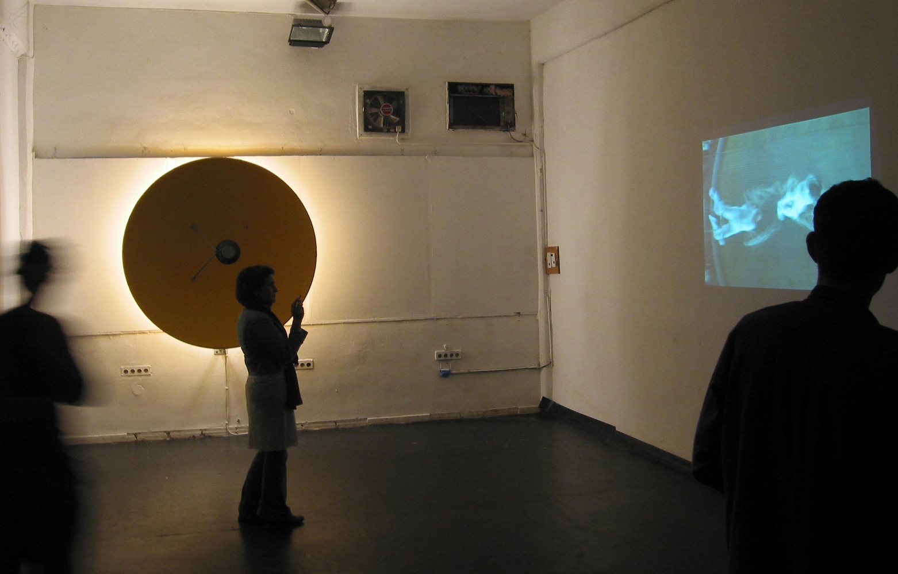
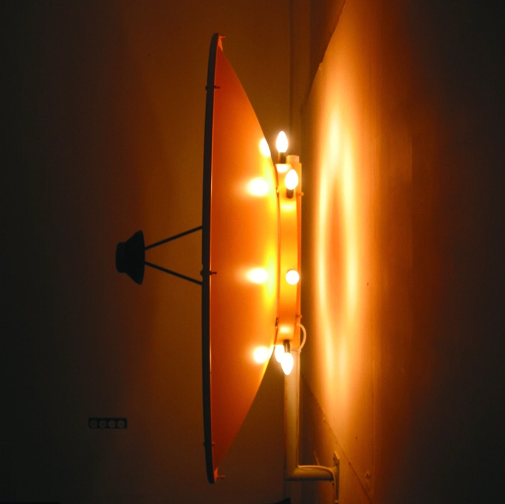

ב12
מקום


עבודה של בניה רכס בתערוכה בב12
ליאור גוטריימן למד צילום במוסררה. בסוף הלימודים, הקים ב־2001 עם שני שותפים (אחד מהם הוא אלון אבנת, מהלהקות דיואלט, מוג'הידין ואנדרטה) סטודיו ברחוב רש"י בשכונת מקור ברוך. המבנה היה בעבר מפעל לליטוש יהלומים, חלק משורה של שלושה מבנים כאלה ברחוב. הם השתמשו בסטודיו כחלל עבודה לעצמם, ובסופי שבוע אירחו אמנים שהציגו והופיעו. בין המופיעים היו צ'ארלי מגירה, קובי אור (המופע חמורו של משיח, עם חן שיינברג), רון קציר (מהצימר בתל אביב). האמנים שהציגו שם עבודות כללו את בניה רכס (מההרכב טפט) וג'ונתן טוויטו.
בשנות ה־80 השכונה הייתה חילונית ובמשך השנים הלכה והתחרדה עד שכשפתחו את הסטודיו הייתה חרדית לגמרי. לאורך כל פעילותו, התנגש הסטודיו עם אופיה הדתי של השכונה, והיו הפגנות של תושבי השכונה נגד קיומו. לבסוף הוצא צו סגירה למקום על ידי שר הפנים אלי ישי ב־2002, בטענה שאין למקום רשיון עסק.